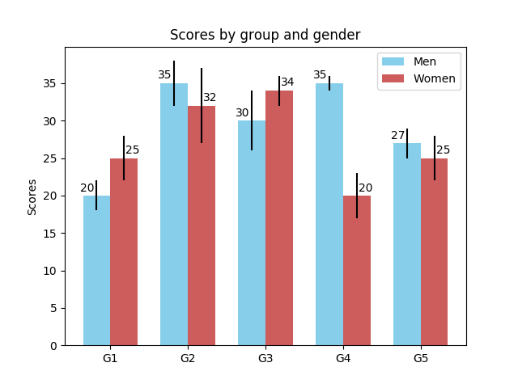

Version 2.2.4
Note
Click here to download the full example code
A bar plot with errorbars and height labels on individual bars.
import numpy as np
import matplotlib.pyplot as plt
men_means, men_std = (20, 35, 30, 35, 27), (2, 3, 4, 1, 2)
women_means, women_std = (25, 32, 34, 20, 25), (3, 5, 2, 3, 3)
ind = np.arange(len(men_means)) # the x locations for the groups
width = 0.35 # the width of the bars
fig, ax = plt.subplots()
rects1 = ax.bar(ind - width/2, men_means, width, yerr=men_std,
color='SkyBlue', label='Men')
rects2 = ax.bar(ind + width/2, women_means, width, yerr=women_std,
color='IndianRed', label='Women')
# Add some text for labels, title and custom x-axis tick labels, etc.
ax.set_ylabel('Scores')
ax.set_title('Scores by group and gender')
ax.set_xticks(ind)
ax.set_xticklabels(('G1', 'G2', 'G3', 'G4', 'G5'))
ax.legend()
def autolabel(rects, xpos='center'):
"""
Attach a text label above each bar in *rects*, displaying its height.
*xpos* indicates which side to place the text w.r.t. the center of
the bar. It can be one of the following {'center', 'right', 'left'}.
"""
xpos = xpos.lower() # normalize the case of the parameter
ha = {'center': 'center', 'right': 'left', 'left': 'right'}
offset = {'center': 0.5, 'right': 0.57, 'left': 0.43} # x_txt = x + w*off
for rect in rects:
height = rect.get_height()
ax.text(rect.get_x() + rect.get_width()*offset[xpos], 1.01*height,
'{}'.format(height), ha=ha[xpos], va='bottom')
autolabel(rects1, "left")
autolabel(rects2, "right")
plt.show()
Keywords: matplotlib code example, codex, python plot, pyplot Gallery generated by Sphinx-Gallery